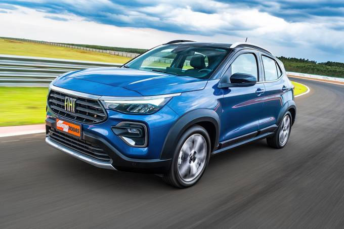

Fiat Pulse estreia a partir de R$ 79.990 e é mais rápido que o Nivus
Fiat Pulse é lançado e promete desbancar os rivais com bom conteúdo tecnológico, motor moderno e eficiente e preço atrativo
Acabou o mistério por trás do Fiat Pulse. O mais novo concorrente do Volkswagen Nivus estreia no Brasil com motores 1.3 aspirado e 1.0 turbo, equipamentos do Jeep Compass e da Fiat Toro e preços entre R$ 79.990 e R$ 115.990.
A expectativa em torno desse lançamento foi enorme. Isso porque seu design foi apresentado em maio, quando seu nome ainda era “progetto 363”, durante a final do Big Brother Brasil.
A partir daí a estratégia da marca foi de apresentar o novo SUV a conta-gotas, ou em novela. Isso valeu até mesmo para o nome Pulse. O penúltimo capítulo foi a apresentação do novo motor 1.0 turbo, o Turbo 200 Flex. QUATRO RODAS revelou com exclusividade em março deste ano que seria o motor turbo mais potente do Brasil com rendimento de até 130 cv.
O último capítulo da novela Pulse foi exibido agora a pouco na live de lançamento nacional. A Fiat finalmente revelou os preços e as versões do Pulse. Serão cinco versões, duas com o conhecido motor que equipa o Argo, o 1.3 flex que rende até 109 cv e três equipadas com a inédita motorização turbinada.
Confira todos os preços do Fiat Pulse 2022:
- Fiat Pulse Drive 1.3 manual – R$ 79.990
- Fiat Pulse Drive 1.3 CVT – R$ 89.990
- Fiat Pulse Drive Tubo 200 – R$ 98.990
- Fiat Pulse Audace Turbo 200 – R$ 107.990
- Fiat Pulse Impetus Turbo 200 – R$ 115.990
Há apenas uma versão com câmbio manual de cinco marchas e uma 1.3 com câmbio CVT. Todas as opções equipadas com o novo motor 1.0 turbo são combinadas com a também inédita transmissão CVT com sete marchas simuladas.